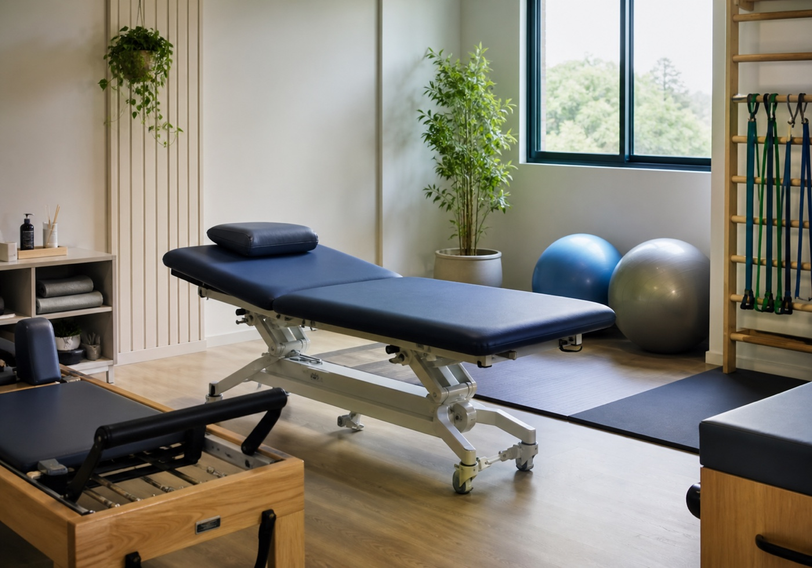

Fisioterapia
Um bloco direto para quem procura avaliação, acompanhamento e orientação profissional.
Fisioterapia e pilates em Vitória
Conceito visual para reunir fisioterapia, pilates, RPG, terapia manual, localização e WhatsApp público da Fisiohealth em uma leitura rápida.

Quem pesquisa pelo celular precisa encontrar o básico antes de chamar: o que a clínica atende, onde fica e qual contato usar.
Serviços citados em fontes públicas
O texto abaixo parte de diretórios públicos e deve ser confirmado pela clínica antes de virar uma página oficial.
Um bloco direto para quem procura avaliação, acompanhamento e orientação profissional.
Apresentação clara do pilates como caminho de movimento e rotina, sem prometer resultado clínico.
Áreas listadas em fonte pública, com espaço para ajustar nomes e detalhes com a equipe.
WhatsApp, endereço e próximos passos ficam juntos para reduzir dúvida antes do primeiro contato.
Como marcar
A pessoa entende os serviços principais sem depender de diretórios soltos.
Toca no botão de WhatsApp e inicia a conversa pelo canal público.
A clínica confirma avaliação, horário, endereço e qualquer detalhe de atendimento.
Contato público
O demo usa dados encontrados em fontes públicas. Antes de publicar oficialmente, endereço, horários e canais devem ser confirmados pela Fisiohealth.
Rua Paschoal Delmaestro, 635, Jardim Camburi, Vitória/ES
Conceito visual não oficial.
Abrir WhatsAppAntes de enviar
Não. É um conceito visual criado com informações públicas para demonstrar uma presença própria.
Não. Nenhum perfil confiável foi confirmado, então o visual usa uma direção segura para fisioterapia e pilates.
Não. O texto apenas organiza serviços e contato. Avaliação e conduta dependem da equipe profissional.